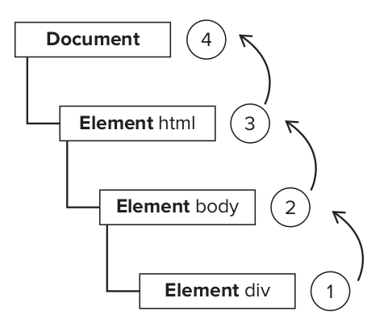
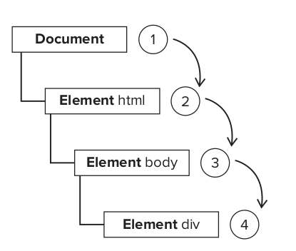
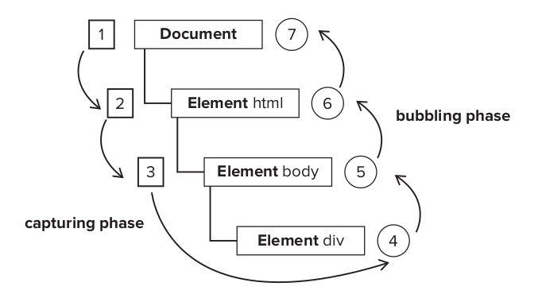

JavaScript’s interaction with HTML is handled through events, which indicate when particular moments of interest occur in the document or browser window. Events can be subscribed to using listeners (also called handlers) that execute only when an event occurs. This model, called the observer pattern
When you click the < div> element in the page, the click event occurs in the following order
< html>
< body>
< div id=”myDiv”>Click Me< /div>
< /body>
< /html>
The click event is first fired on the < div> , which is the element that was clicked. Then the click event goes up the DOM tree, firing on each node along its way until it reaches the document object
The theory of event capturing is that the least specific node should receive the event first and the most specific node should receive the event last. Event capturing was really designed to intercept the event before it reached the intended target.
With event capturing, the click event is first received by the document and then continues down the DOM tree to the actual target of the event, the < div> element.
Event capturing occurs fi rst, providing the opportunity to intercept events if necessary. Next, the actual target receives the event. The final phase is bubbling, which allows a final response to the event.
In the DOM event flow, the actual target (the < div> element) does not receive the event during the capturing phase. This means that the capturing phase moves from document to < html> to < body> and stops
Internet Explorer 9, Opera, Firefox, Chrome, and Safari all support the DOM event flow; Internet Explorer 8 and earlier do not.
Events are certain actions performed either by the user or by the browser itself. These events have names like click , load , and mouseover . A function that is called in response to an event is called an event handler (or an event listener). Event handlers have names beginning with “on” , so an event handler for the click event is called onclick and an event handler for the load event is called onload .
Each event supported by a particular element can be assigned using an HTML attribute with the name of the event handler. The value of the attribute should be some JavaScript code to execute.When this button is clicked, an alert is displayed. This interaction is defi ned by specifying the onclick attribute and assigning some JavaScript code as the value. Note that since the JavaScript code is an attribute value, you cannot use HTML syntax characters such as the ampersand, double quotes, less-than, or greater-than without escaping them.
< input type=”button” value=”Click Me” onclick=”alert(‘Clicked’)” />
An event handler defi ned in HTML may contain the precise action to take or it can call a script defined elsewhere on the page
Code executing as an event handler has access to everything in the global scope.
< script type=”text/javascript”>
function showMessage(){
alert(“Hello world!”);
}
< /script>
< input type=”button” value=”Click Me” onclick=”showMessage()” />
Event handlers assigned in this way have some unique aspects. First, a function is created that wraps the attribute value. That function has a special local variable called event , which is the event object
This gives you access to the event object without needing to defi ne it yourself and without needing to pull it from the enclosing function’s argument list. The this value inside of the function is equivalent to the event’s target elemen
< input type=”button” value=”Click Me” onclick=”alert(event.type)”>
< input type=”button” value=”Click Me” onclick=”alert(this.value)”>
The traditional way of assigning event handlers in JavaScript is to assign a function to an event handler property. This was the event handler assignment method introduced in the fourth generation of web browsers, and it still remains in all modern browsers because of its simplicity and cross-browser support.When assigning event handlers using the DOM Level 0 method, the event handler is considered to be a method of the element. The event handler, therefore, is run within the scope of element, meaning that this is equivalent to the element.
const btn = document.getElementById(“myBtn”);
btn.onclick = function(){
alert(“Clicked”);
alert(this.id); //”myBtn”
};
The ID is retrieved using this.id . It’s possible to use this to access any of the element’s properties or methods from within the event handlers. Event handlers added in this way are intended for the bubbling phase of the event fl ow. You can remove an event handler assigned via the DOM Level 0 approach by setting the value of the event handler property to null
btn.onclick = null; //remove event handler
DOM Level 2 Events defi ne two methods to deal with the assignment and removal of event handlers: addEventListener() and removeEventListener() . These methods exist on all DOM nodes and accept three arguments: the event name to handle, the event handler function, and a Boolean value indicating whether to call the event handler during the capture phase ( true ) or during the bubble phase ( false ).
const btn = document.getElementById(“myBtn”);
btn.addEventListener(“click”, function(){
alert(this.id);
}, false);
This code adds an onclick event handler to a button that will be fi red in the bubbling phase (since the last argument is false ). As with the DOM Level 0 approach, the event handler runs in the scope of the element on which it is attached. The major advantage to using the DOM Level 2 method for adding event handlers is that multiple event handlers can be added.
const btn = document.getElementById(“myBtn”);
btn.addEventListener(“click”, function(){
alert(this.id);
}, false);
btn.addEventListener(“click”, function(){
alert(“Hello world!”);
}, false);
Event handlers added via addEventListener() can be removed only by using removeEventListener() and passing in the same arguments as were used when the handler was added. This means that anonymous functions added using addEventListener() cannot be removed
const btn = document.getElementById(“myBtn”);
btn.addEventListener(“click”, function(){
alert(this.id);
}, false);
btn.removeEventListener(“click”, function(){
alert(this.id); //won’t work!
}, false);
The call to removeEventListener() looks like it’s using the same arguments, but in reality, the second argument is a completely different function than the one used in addEventListener() . The event handler function passed into removeEventListener() must be the same one that was used in addEventListener()
const btn = document.getElementById(“myBtn”);
const handler = function(){
alert(this.id);
};
btn.addEventListener(“click”, handler, false);
//other code here
btn.removeEventListener(“click”, handler, false);//works!
Internet Explorer implements methods similar to the DOM called attachEvent() and detachEvent() . These methods accept the same two arguments: the event handler name and the event handler function. Since Internet Explorer 8 and earlier support only event bubbling, event handlers added using attachEvent() are attached on the bubbling phase. When using DOM Level 0, the event handler runs with a this value equal to the element on which it is attached; when using attachEvent() , the event handler runs in the global context, so this is equivalent to window
const btn = document.getElementById(“myBtn”);
btn.attachEvent(“onclick”, function(){
alert(“Clicked”);
alert(this === window); //true
});
const EventUtil = {
addHandler: function(element, type, handler){
if (element.addEventListener){
element.addEventListener(type, handler, false);
} else if (element.attachEvent){
element.attachEvent(“on” + type, handler);
}
},
removeHandler: function(element, type, handler){
if (element.removeEventListener){
element.removeEventListener(type, handler, false);
} else if (element.detachEvent){
element.detachEvent(“on” + type, handler);
} else {
element[“on” + type] = null;
}
}
};
In DOM-compliant browsers, the event object is passed in as the sole argument to an event handler. Regardless of the method used to assign the event handler, DOM Level 0 or DOM Level 2, the event object is passed in.
const btn = document.getElementById(“myBtn”);
btn.onclick = function(event){
alert(event.type);
//”click”
};
btn.addEventListener(“click”, function(event){
alert(event.type);
//”click”
}, false);
Inside an event handler, the this object is always equal to the value of currentTarget , whereas target contains only the actual target of the event. If the event handler is assigned directly onto the intended target, then this , currentTarget , and target all have the same value
const btn = document.getElementById(“myBtn”);
btn.onclick = function(event){
alert(event.currentTarget === this); //true
alert(event.target === this); //true
};
the values of currentTarget and target relative to this . Since the target of the click event is the button, all three are equal. If the event handler existed on a parent node of the button, such as document.body , the values would be different.
document.body.onclick = function(event){
alert(event.currentTarget === document.body); //true
alert(this === document.body); //true
alert(event.target === document.getElementById( “myBtn”)); //true
};
When the button is clicked in this example, both this and currentTarget are equal to document.body because that’s where the event handler was registered. The target property, however, is equal to the button element itself, because that’s the true target of the click event. Since the button itself doesn’t have an event handler assigned, the click event bubbles up to document.body , where the event is handled.
const btn = document.getElementById(“myBtn”);
const handler = function(event){
switch(event.type){
case “click”: alert(“Clicked”); break;
case “mouseover”: event.target.style.backgroundColor = “red”; break;
case “mouseout”: event.target.style.backgroundColor = “”; break;
}
};
btn.onclick = handler; btn.onmouseover = handler; btn.onmouseout = handler;
The preventDefault() method is used to prevent the default action of a particular event. The default behavior of a link, for example, is to navigate to the URL specifi ed in its href attribute when clicked. If you want to prevent that navigation from occurring, an onclick event handler can cancel that behavior
const link = document.getElementById(“myLink”);
link.onclick = function(event){
event.preventDefault();
};
The stopPropagation() method stops the fl ow of an event through the DOM structure immediately, canceling any further event capturing or bubbling before it occurs. For example, an event handler added directly to a button can call stopPropagation() to prevent an event handler on document.body from being fi red
const btn = document.getElementById(“myBtn”);
btn.onclick = function(event){
alert(“Clicked”);
event.stopPropagation();
};
document.body.onclick = function(event){
alert(“Body clicked”);
};
UI events are those events that aren’t necessarily related to user actions. These events existed in some form or another prior to the DOM specifi cation and were retained for backwards compatibility
Focus events are fi red when elements of a page receive or lose focus. These events work in concert with the document.hasFocus() and document.activeElement properties to give insight as to how the user is navigating the page
Mouse events are the most commonly used group of events on the Web, because the mouse is the primary navigation device used
Mouse events all occur at a particular location within the browser viewport. This information is stored in the clientX and clientY properties of the event object.
const div = document.getElementById(“myDiv”);
div.addEventListener(“click”, function(event){
alert(“Client coordinates: “ + event.clientX + “,” + event.clientY);
});
Where client coordinates give you information about where an event occurred in the viewport, page coordinates tell you where on the page the event occurred via the pageX and pageY properties of the event object. These properties indicate the location of the mouse cursor on the page, so the coordinates are from the left and top of the page itself rather than the viewport
const div = document.getElementById(“myDiv”);
div.addEventListener(“click”, function(event){
alert(“Page coordinates: “ + event.pageX + “,” + event.pageY);
})
Mouse events occur not only in relation to the browser window but also in relation to the entire screen. It’s possible to determine the location of the mouse in relation to the entire screen by using the screenX and screenY properties.
const div = document.getElementById(“myDiv”);
div.addEventListener(“click”, function(event) {
alert(“Screen coordinates: “ + event.screenX + “,” + event.screenY);
})
Keyboard events are fi red when the user interacts with the keyboard. DOM Level 2 Events originally specified keyboard events, but that section was removed before the specification became fi nal. As a result, keyboard events are largely supported based on the original DOM Level 0 implementations.
For keydown and keyup events, the event object’s keyCode property is fi lled in with a code that maps to a specifi c key on the keyboard. For alphanumeric keys, the keyCode is the same as the ASCII value for the lowercase letter or number on that key, so the 7 key has a keyCode of 55 and the A key has a keyCode of 65, regardless of the state of the Shift key
const textbox = document.getElementById(“myText”);
textbox.addEventListener(“keyup”, function(event){
alert(event.keyCode);
});
The DOM Level 3 Events specifi cation introduced an event called textInput that fi res when a character is input to an editable area. Designed as a replacement for keypress , a textInput event behaves somewhat differently.
const textbox = document.getElementById(“myText”);
textbox.addHandler(“textInput”, function(event){
alert(event.data);
});
window.addEventListener( “load”, function(event){
const div = document.getElementById(“myDiv”);
alert(“load”);
});
document.addEventListener( “beforeunload”, function(event){
alert(“beforeunload”);
});
document.addEventListener( “DOMContentLoaded”,, function(event){
alert(“DOMContentLoaded”);
});
The onhashchange event handler must be attached to the window , and it is called whenever the URL hash changes. The event object should have two additional properties: oldURL and newURL . These properties hold the complete URL including the hash before the change and after the change.
window.addEventListener(“hashchange”, function(event){
alert(“Old URL: “ + event.oldURL + “\nNew URL: “ + event.newURL);
});
The orientationchange Event window.orientation
Apple created the orientationchange event on mobile Safari so that developers could determine when the user switched the device from landscape to portrait mode. There is a window.orientation property on mobile Safari that contains one of three values: 0 for portrait mode, 90 for landscape mode when rotated to the left
window.addEventListener(“load”, function(event){
var div = document.getElementById(“myDiv”);
div.innerHTML = “Current orientation is “ + window.orientation;
window.addEventListener(“orientationchange”, function(event){
div.innerHTML = “Current orientation is “ + window.orientation;
});
});
< div id=”myDiv”>
< input type=”button” value=”Click Me” id=”myBtn”>
< /div>
< script type=”text/javascript”>
const btn = document.getElementById(“myBtn”);
btn.onclick = function(){ //do something
btn.onclick = null; //remove event handler
document.getElementById(“myDiv”).innerHTML = “Processing...”;
};
< /script>
< div id=”myDiv”>
< input type=”button” value=”Click Me” id=”myBtn”>
< /div>
< script type=”text/javascript”>
const btn = document.getElementById(“myBtn”);
const handler = function(event) {console.log(event)}
btn.addEventListener('click', handler);
btn.removeEventListener('click', handler);
< /script>